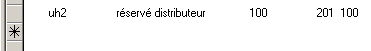
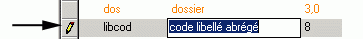
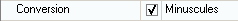

L’édition d’un dictionnaire peut se faire en utilisant exclusivement les menus contextuels, accessibles par le clic droit sur un objet. Le menu donne alors la liste des opérations qu’il est possible de réaliser et indique également le raccourci clavier correspondant.
Nous ne donnerons donc ici que quelques indications.
Champs ou Index
Le dictionnaire permet de travailler de deux manières différentes :
par fichiers – tables – champs
par fichiers – tables – index
Les choix Champs et Index du menu Edition et les boutons et permettent de sélectionner le mode dans lequel vous désirez travailler.
Passage de l’arbre au tableau
La touche Tab permet de passer du tableau à l’arbre et réciproquement.
L’élément courant reste inchangé. Lors du passage de l’arbre vers le tableau, l’élément courant du tableau est l’élément qui était le courant dans l’arbre.
Insertion d’un nouvel objet
L’insertion d’un nouvel objet se fait soit
par le menu contextuel,
par la touche Insert,
par un clic souris sur l’étoile de création du tableau.

Remarques
Depuis l’arbre, la création se fait en mode fiche.
Depuis le tableau, la création se fait en mode liste. La touche Shift+F4 permet de passer en mode fiche. Le retour en mode liste se fait par le bouton Mode Liste.
Modification d’un objet
La modification d’un objet se fait soit
par le menu contextuel,
par la touche Entrée pour une modification en mode ligne,
par les touches Shift + Entrée qui se positionne dans le tableau des propriétés.
par un clic souris sur la colonne de contrôle du tableau.

Remarques
Les fonctionnalités de la saisie dans le tableau des propriétés est décrite dans la documentation consacrée aux masques écran au chapitre : Saisie des paramètres des objets.
Seules quelques propriétés sont modifiables en mode ligne. Les autres propriétés doivent être saisies dans le tableau des propriétés à droite de l'écran.
Le tableau des propriétés affiche soit les propriétés locales de l'objet soit les propriétés locales. Le bouton permet de basculer d'un mode à l'autre.
Pour modifier une propriété locale qui existe également au niveau global, il faut cocher la case située avant la valeur de la propriété.

Expanser / réduire
L’expansion (ou le développement) d’un élément de l’arbre se fait par
un double clic sur l’élément de l’arbre
la touche +
le bouton
La réduction d’un élément de l’arbre se fait par
un double clic sur l’élément de l’arbre
la touche -
le bouton